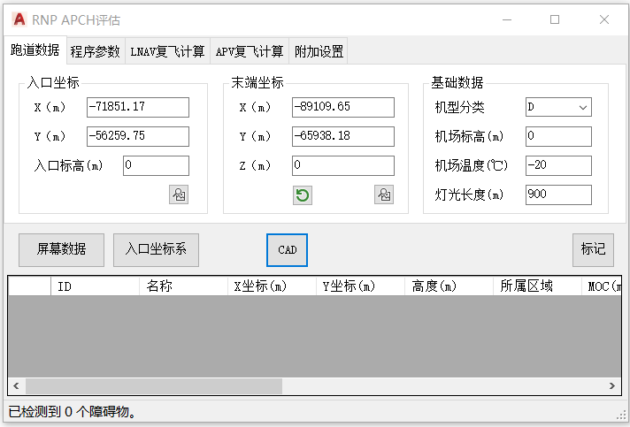

功能简介
【RNP 进近】用于 RNP APCH（含 APV / Baro-VNAV）进近程序的保护区构建与障碍物评估。
界面预览

界面元素
| 选项卡 / 控件 | 说明 |
|---|---|
| 跑道数据（选项卡） | 入口坐标、末端坐标、基础数据；含【入口坐标系】【屏幕数据】【拾取】【加载】/【保存】。 |
| 程序参数 · 最后进近 | 最后进近段的 RNP、长度等参数。 |
| 程序参数 · 中间进近 | 中间进近段参数。 |
| 程序参数 · 复飞 | 复飞段参数。 |
| CAD（按钮） | 绘制保护区。 |
通用评估流程
- 命令行输入
Y53_RNP_APCH打开窗口。 - 【入口坐标系】建立评估坐标系，填入跑道数据与基础数据。
- 【屏幕数据】载入图纸障碍物。
- 在“程序参数”中分别设置最后进近、中间进近、复飞各段参数。
- 执行评估后，用【CAD】绘制保护区。
联动：在障碍物列表中单击某行，图纸会自动高亮并居中到该障碍物。